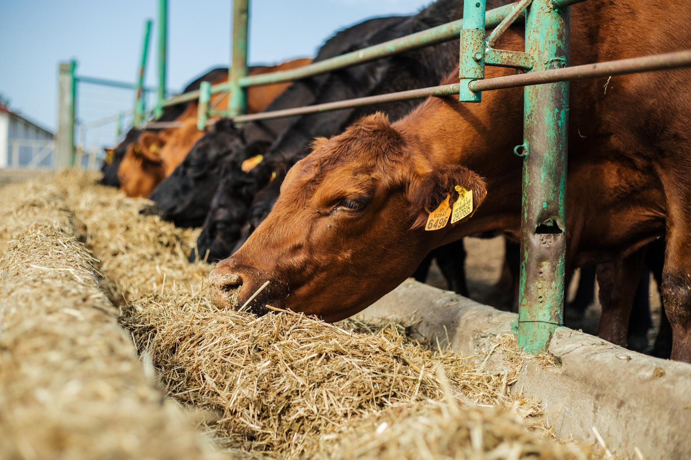

Las operaciones ganaderas intensivas generan volúmenes constantes de estiércol y aguas residuales. Tratado en biodigestor, ese residuo se convierte en biogás aprovechable y digestato como biofertilizante.

Limpieza de corrales y captación de aguas de lavado a tanque ecualizador.
Laguna cubierta o tanque agitado; producción continua de biogás.
Combustión térmica, generación eléctrica o upgrading a biometano.
Aplicación como biofertilizante en campos propios o de terceros.
El número de animales y el sistema de manejo definen el potencial energético.